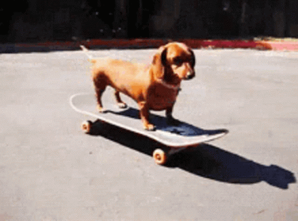
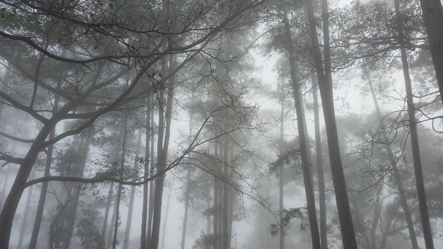
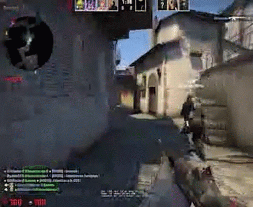
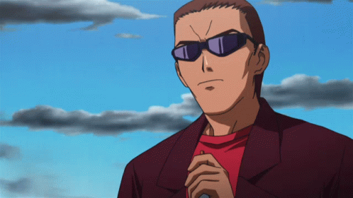
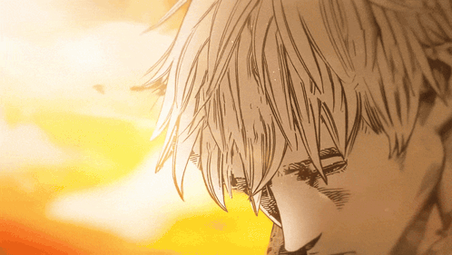

01
Skate
La tabla, el movimiento y salir a rodar.
EN MOVIMIENTO

UN RINCÓN PERSONAL · LOS MOCHIS
Una biografía personal entre paisajes nublados y gustos personales.
Conoce mi historia01 — DE DÓNDE VENGO
Nací en Los Mochis, una ciudad que forma parte de mi historia y de quien soy.
Actualmente estudio en la Prepa UAS. Me gusta encontrar calma en los paisajes grandes y hermosos; prefiero los cielos cubiertos y la inmensidad de la naturaleza antes que las flores.
Este espacio reúne algunas de las cosas que disfruto y que hacen que mi mundo se sienta mío.
02 — MI UNIVERSO
La tabla, el movimiento y salir a rodar.
EN MOVIMIENTO
Minecraft, Left 4 Dead 2 y CS:GO.
MODO JUEGO
Berserk (1997), Tokyo Ghoul, Attack on Titan, Elfen Lied y Another.
HISTORIAS QUE IMPACTAN
03 — MI LADO TRANQUILO
No necesito que todo esté soleado. A veces, un día nublado y un paisaje inmenso son justo lo que hace falta para bajar el ruido y respirar.
Un objetivo sencillo: conseguir la paz.

04 — LO QUE SUENA EN MIS AUDÍFONOS
Artistas que forman parte de mi rotación: